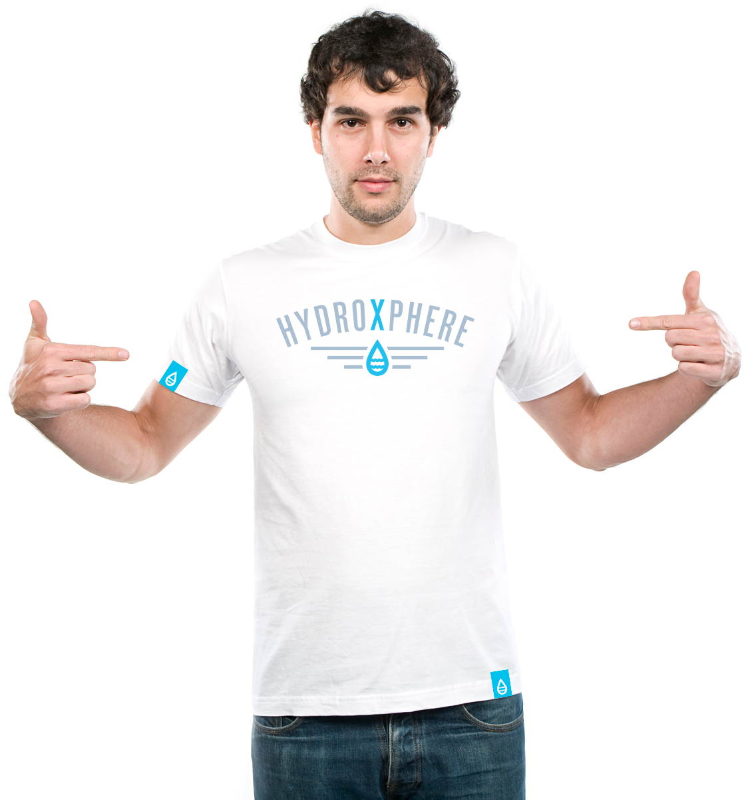
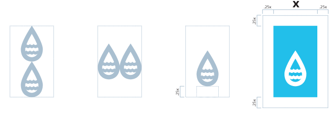

<!DOCTYPE html>
<html>
  <head>
    <meta charset="utf-8">
    <meta name="viewport" content="width=320, initial-scale=1, maximum-scale=1, user-scalable=1"/>
    <meta name="description" content="Dan Malarkey, Dan, Malarkey, HTML, HTML5, CSS, CSS3, Open Source, Open Source Framework, Front End Framework, Boilerplate"> 
    <meta name="keywords" content="Dan Malarkey, UI Designer, Dan Malarkey UI Designer, UX designer, Dan Malarkey UX Designer, Jacksonville Florida UI Designer, Jacksonville Florida UX Designer, Dan Malarkey Jacksonville Florida UI Designer, Jacksonville Florida UX Designer, Jacksonville User Interface Designer, Jacksonville User Experience Designer, Florida User Interface Designer, Florida User Experience Designer, Jacksonville Front End Development, Schema UI Framework, Dan Malarkey feature[23], Dan feature[23], HTML, CSS, JS, JavaScript, framework, front-end, frontend, web development, schema, schema ui, schema ui framework, css framework, css frameworks">
    <meta name="author" content="Dan Malarkey | http://danmalarkey.com ©2014">

		<!-- Stylesheet -->
		<link rel="stylesheet" href="stylesheets/css/base.css" type="text/css">
    <link rel="stylesheet" href="//cdnjs.cloudflare.com/ajax/libs/font-awesome/4.0.3/css/font-awesome.min.css">
    <!-- Typekit -->
    <script type="text/javascript" src="//use.typekit.net/cba7yog.js"></script>
    <script type="text/javascript">try{Typekit.load();}catch(e){}</script>
        
    <!-- HTML5 shim, for IE6-8 support of HTML5 elements -->
    <!--[if lt IE 9]>
        <script src="//html5shim.googlecode.com/svn/trunk/html5.js"></script>
    <![endif]-->
    <script src="http://ajax.googleapis.com/ajax/libs/jquery/1.10.2/jquery.min.js"></script>
    <script src="stylesheets/js/jquery.easydropdown.js"></script>
    <script src="stylesheets/js/modernizr.custom.js"></script>
    <script type="text/javascript" src="http://updateyourbrowser.net/uyb.js"></script>
		<title>Dan Malarkey - HydroXphere | UI Designer |  User Interface Designer  |  Saint Augustine Florida  |  Jacksonville Florida  |  User Experience Designer  |  UX Designer</title>
    </head>
    
  <body>
    <header class="hxp-hero">
      <div class="hero-overlay"></div>
      <div class="container">
        <a class="logo" href="index.html">
          
        </a>
        <nav>
          <a href="">Lets Chat</a>
          <a href="">Brain Dumps</a>
          <a href="casestudies.html" class="active">Case Studies</a>
          <a href="experience.html">Experience</a>
        </nav>
        <div class="col6 product-shot">
          
        </div>
      </div>
    </header>
    
    <section class="work-sample-wrapper">
      <div class="container">
        <div class="row-fluid">
          <div class="col6">
            <h5>
              Client:
            </h5>
            <h3>
              HydroXphere
            </h3>
          </div>
          <div class="col6">
            <h5>
              Services:
            </h5>
            <h3>
              Brand • iOS • Web • Web Development
            </h3>
          </div>
        </div>
      </div>
    </section>
    
    <section class="project-display">
      <div class="container">
        <div class="row-fluid">
          <div class="col6">
            <h2>The Problem</h2>
            <hr class="hr_medium">
            <p class="left-float">2012 Olympic Gold Medalist, Charlie Houchin, wanted to change the way Summer Swim Meets were run. Swim meets now are being run the same as they were forty years ago. Starters are yelling into a megaphone, Timers are giving half their attention to the swimmer in the pool, the Judge is thinking about where they're eating for dinner, and the Scorekeeper is still dealing with wet, soggy paper. Swimming techniques have gotten better of the last four decades, so why hasn't the running of swim meets changed? It hasn't, until now.</p>
          </div>
          <div class="col6">
            <h2>The Solution</h2>
            <hr class="hr_medium">
            <p class="left-float">We helped HydroXphere take the paper and move to the paperless. Our biggest goal was to keep the familiarity for all roles (Starter, Timer, Judge, Scorekeeper) in running meets. We streamlined the process so swim clubs could achieve maximum efficiency in operating their meets. HydroXphere's Intelligent Scoring System also includes a Virtual Scoreboard that provides results in real-time on an iPad, so there is no more waiting for results until the meet is over. Running meets with HydroXphere still holds that summer experience, but only it's ran with 21st Century tools.</p>
          </div>
        </div>
      </div>
    </section>
    
    <section class="hxp">
      <div class="container hxp-logo">
        
      </div>
      <div class="container mockup">
          <div class="row-fluid">
            <div id="count" class="col8 count">
              
            </div>
            <div class="col4">
             <h3>Weeks of Research - Brand Strategy</h3>
              <p>Ideally, a logo should explain or suggest the business it symbolizes. A logo takes on 
              meaning, only if over a period of time it is linked to some product or service of a particular
              organization. A meaningful device is needed to reinforce the memorability of the company name. 
              I wanted to design a logo that represented everything that is HydroXphere; modern design and 
              a state of the art technology.</p>
              
              <p>The logo starts with a very modern logotype. The type is set at a 25% arc to 
              represent the diving motion that a swimmer experiences when diving into a heat. 
              The water droplet encompasses the foundation of the sport. The waves inside the droplet 
              convey the knowledge and persistence that HydroXphere brings to the sport of swimming.
              HydroXphere is the cutting edge technology that will be leading the sport for years to come. </p>
              
              <h4>Tag dimensions</h4>
                
                <p>The HydroXphere tag is two water droplets in height, and two water droplets in width. 
                The droplet itself sits a quarter of a water droplet (in height) from the bottom of the tag.
                The tag is used for the apparel, postcards, business cards, mailers, web banners, or 
                the web site.</p> 
            </div>
          </div>
      </div>
    </section>
    
    <section class="palette">
      <div class="container">
        <h2>Color Palette</h2>
        <hr class="hr_thin">
        <div class="row-fluid">
          <div class="col2 circle light-grey"></div>
          <div class="col2 circle medium-grey"></div>
          <div class="col2 circle dark-grey"></div>
          <div class="col2 circle hxp-black"></div>
          <div class="col2 circle hxp-blue"></div>
          <div class="col2 circle hxp-darkblue"></div>
        </div>
      </div>
    </section>
    
    <footer>
      <div class="container">
        <h1 class="text-center">Have a great idea or business need?</h1>
        <p class="text-center"><a href="#" class="btn btn-orange btn-xl">lets build it together</a></p>
        <nav class="icons">
          <a href="#" class="fa fa-twitter"></a>
          <a href="#" class="fa fa-github"></a>
          <a href="#" class="fa fa-bitbucket"></a>
          <a href="#" class="fa fa-instagram"></a>
          <a href="#" class="fa fa-dribbble"></a>
          <a href="#" class="fa fa-linkedin"></a>
        </nav>
        <p class="details text-center">This site was built with <a href="#">Schema UI.</a> The fonts are hosted through 
        <a href="#">Typekit</a>, and the icons are from <a href="#">Font Awesome</a>.
        <nav class="text-center">
          <a href="experience.html">Experience</a>
          <span class="divider">|</span>
          <a href="#">Case Studies</a>
          <span class="divider">|</span>
          <a href="#">Brain Dumps</a>
          <span class="divider">|</span>
          <a href="#">Lets Chat</a>
        </nav>
      </div>
      <p class="copyright text-center">© 2014. Dan Malarkey <i class="fa fa-heart"></i> Jacksonville, Florida</p>
    </footer>
        <script src="stylesheets/js/waypoints.min.js"></script>
    <script>
      //$(window).bind("load", function() {
        $('#count').waypoint(function() {
         $(this).toggleClass('animate');
        },{
          offset:'70%',
          triggerOnce:true
        });
        $('body').load (function() {
          $(this).toggleClass('fadeInDown');
        });
      //});
    </script>
  </body>
</html>